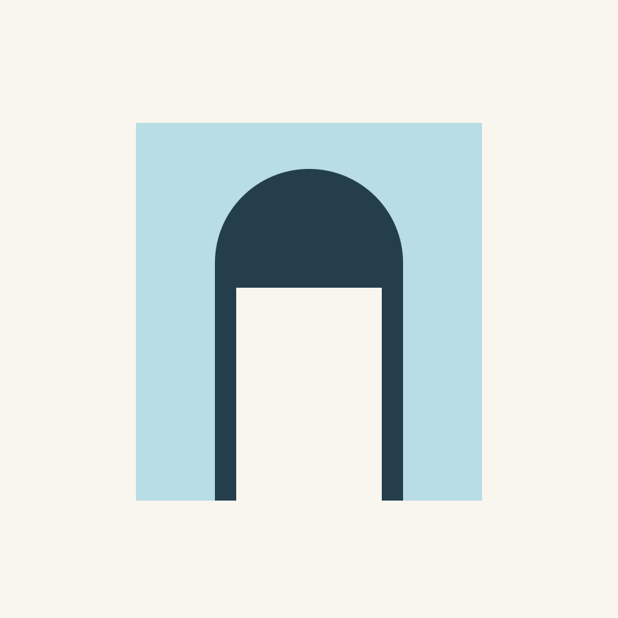
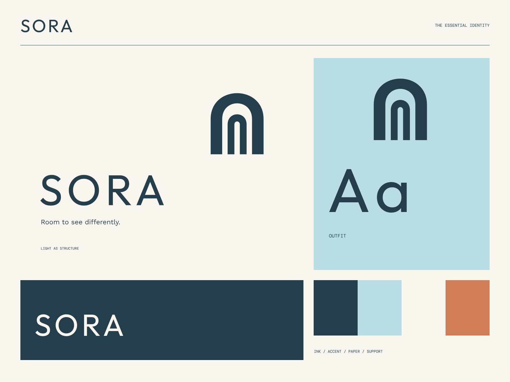

01
Begin with the light
A considered approach to how a space feels throughout the day.
ARCHITECTURE / INTERIORS / LIGHT
Room to see differently. Space, shaped by daylight.

A coherent little world
Space, shaped by daylight. Room to see differently.
01
A considered approach to how a space feels throughout the day.
02
Form and texture chosen for their place, purpose, and longevity.
03
Measured spaces that leave enough room for real life.

The point of view
Monolithic apertures, isometric architectural studies, and rigorously spaced type. Every application treats light and negative space as building materials.